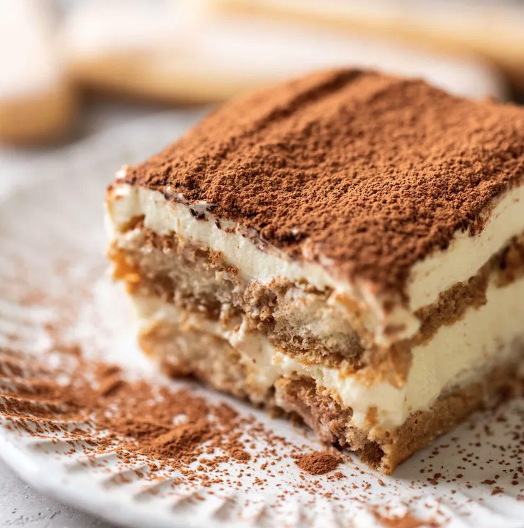

Tiramisu Treat

For That Good ole Sweet Tooth
A classic Italian dessert made with layers of ladyfingers soaked in espresso and coffee liqueur, and a rich, creamy mixture of mascarpone cheese, eggs, and sugar. The layers are then dusted with cocoa powder, which adds a delicious bitter contrast to the sweet and creamy dessert.
The resulting flavor is a decadent and sophisticated blend of coffee, chocolate, and cream that is sure to satisfy any sweet tooth. Tiramisu is typically served chilled, and it is a perfect ending to any meal.
Ingredients
- ladyfingers
- mascarpone
- coffee
- heavy whipped cream
- granulated sugar
- vanilla extract
- cocoa powder
Steps
- Beat the mascarpone, cream, sugar, and vanilla together until stiff peaks
- Dip lady fingers. Add the espresso and liqueur (if using) to a shallow bowl and dip the lady fingers on both sides (don’t let them soak–just a quick dip!)
- Layer mascarpone. Smooth a layer of the mascarpone/whipped cream mixture on top of the lady fingers.
- Repeat. Add another layer of lady fingers (dipped in coffee and liqueur) and another layer of cheese mixture.
- Dust with cocoa powder